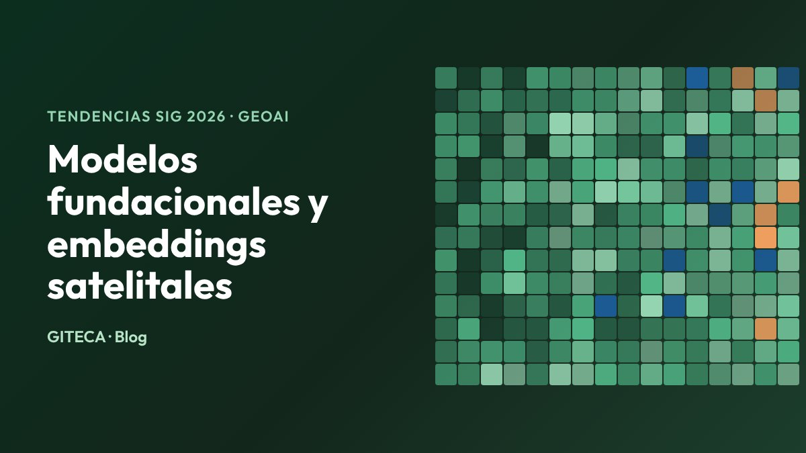

Modelos fundacionales y embeddings satelitales: clasificar el bosque con pocos datos de campo
La gran tendencia GeoAI de 2026 son los modelos entrenados con millones de imágenes de satélite que luego se adaptan a tareas concretas. Para quien trabaja en la Amazonía, significa mapas de cobertura y de cambio con menos parcelas de entrenamiento.

La novedad
Un modelo fundacional geoespacial aprende de enormes volúmenes de imágenes satelitales una «representación» general de la superficie terrestre, que luego se ajusta a una tarea específica con pocos datos propios. En 2026 estos modelos dejaron de ser solo de investigación:
- Embeddings de Google en Earth Engine. El conjunto
GOOGLE/SATELLITE_EMBEDDING/V1/ANNUAL, generado con el modelo AlphaEarth Foundations, resume cada píxel de 10 m en un vector de 64 valores que integra un año de observaciones de varios sensores. Está disponible de 2017 a 2025, con licencia CC-BY 4.0. - Modelos en software de escritorio. ArcGIS incorpora modelos fundacionales como Prithvi y Clay como base para el aprendizaje profundo con imágenes.
- Modelos de visión y lenguaje. Empiezan a aparecer modelos que responden preguntas en lenguaje natural sobre una imagen satelital, todavía en fase temprana.
Por qué importa para el bosque
Clasificar coberturas en la Amazonía choca siempre con lo mismo: nubes, pocas parcelas de verificación y clases difíciles de separar, como aguajal, bosque de varillal o purma. Con los embeddings, buena parte del trabajo de preparar índices, compuestos sin nubes y series temporales ya viene resuelta: basta un clasificador sencillo y un conjunto pequeño de puntos bien elegidos.
Cómo lo aplicaríamos
Limitaciones y cuidados
- Resolución anual. Un embedding resume un año completo: sirve para coberturas y cambios entre años, no para alertas semanales.
- Difícil de interpretar. Los 64 valores no son bandas físicas; el resultado debe validarse con campo y con imágenes de alta resolución.
- Evaluación independiente. Buena parte de la información disponible viene de los propios proveedores; conviene medir la exactitud con datos propios antes de usar los mapas en decisiones oficiales.